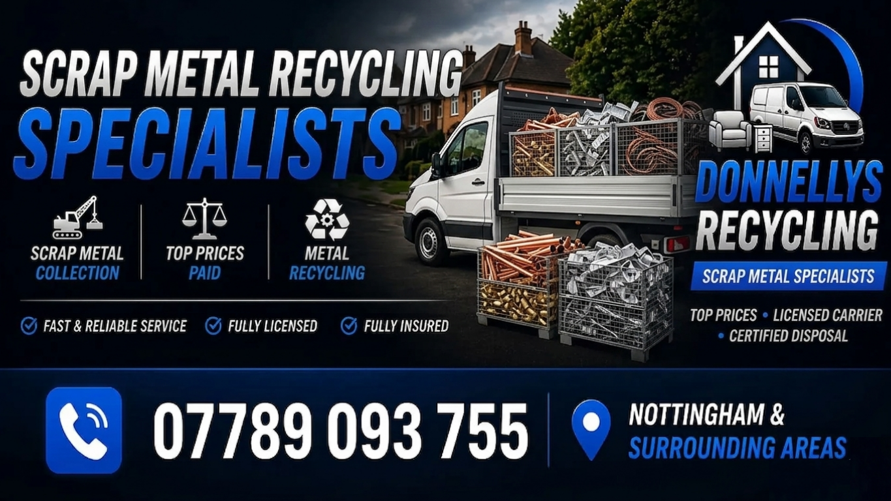

Scrap metal can be removed as part of a house/waste clearance. For scrap-only collections, we offer free collection on substantial loads across Nottingham. Small quantities or single items may still be collected free if they are local to our route. Collections requiring a dedicated journey are generally subject to a £30 collection charge.
To keep our service economical, free collection is generally reserved for:
Small quantities and single items may still qualify for free collection if they are close to our current route. Please send us a photo and postcode for confirmation.
If it’s metal, we can usually take it. Message a photo if you’re unsure.
Nottingham: Free collection is available for substantial loads of scrap metal and multiple appliances. Smaller loads and single items may also be collected free where they are local to our existing routes. Collections requiring a dedicated journey are generally subject to a £30 collection charge.
Derby: Free collection for larger quantities only.
Free collection is available for larger loads and many local collections. If you only have one or two items, send us a photo and postcode. If the collection is close to our route, we can often collect free of charge. Collections requiring a dedicated journey are generally subject to a £30 charge.
Collection is free for larger scrap metal loads and many local collections. However, if you are outside our immediate daily route or have a very small quantity, a £30 fee may apply to cover our time and fuel.
Multiple appliances, a full heating system (boiler + multiple radiators), or a significant amount of heavy scrap metal.
If you also need furniture, rubbish or a complete clear-out, see our House Clearance Nottingham service.